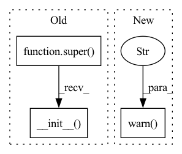

Pattern ID :10371

Before Change
n_samples: Optional[int] = 10000,
**kwargs
):
super().__init__(**kwargs)
self.prediction_properties = prediction_properties
self.margin_quantile_filter = margin_quantile_filter
self.numerical_drift_method = numerical_drift_method
self.categorical_drift_method = categorical_drift_method
After Change
def __init__(self, *args, **kwargs):
warnings.warn("The TrainTestPredictionDrift check is deprecated and will be removed in the 0.14 version."
"Please use the PredictionDrift check instead.", DeprecationWarning, stacklevel=2)
PredictionDrift.__init__(self, *args, **kwargs)
In pattern: SUPERPATTERN
Frequency: 6
Non-data size: 3
Instances
Fragment ID: 36321650
Project Name: deepchecks/deepchecks
Commit Name: 85e69bfc9c70bb7e6e022b61edbd61fb376b3abe
Time: 2023-03-09
Author: ESLofir@gmail.com
File Name: deepchecks/vision/checks/model_evaluation/train_test_prediction_drift.py
M Class Name: TrainTestPredictionDrift
N Class Name: TrainTestPredictionDrift
M Method Name: __init__(1)
N Method Name: __init__(13)
M Parent Class: PredictionDrift
N Parent Class: ReducePropertyMixin,TrainTestCheck
M File Name: deepchecks/vision/checks/model_evaluation/train_test_prediction_drift.py
N File Name: deepchecks/vision/checks/model_evaluation/train_test_prediction_drift.py
M Start Line: 126
M End Line: 156
N Start Line: 28
N End Line: 31
'>
Before Change
random_state: int = 42,
**kwargs
):
super().__init__(**kwargs)
self.margin_quantile_filter = margin_quantile_filter
self.max_num_categories_for_drift = max_num_categories_for_drift
self.min_category_size_ratio = min_category_size_ratio
self.max_num_categories_for_display = max_num_categories_for_display
After Change
def __init__(self, *args, **kwargs):
warnings.warn("The TrainTestLabelDrift check is deprecated and will be removed in the 0.14 version."
"Please use the LabelDrift check instead.", DeprecationWarning, stacklevel=2)
LabelDrift.__init__(self, *args, **kwargs)
'>
Fragment ID: 36321651
Project Name: deepchecks/deepchecks
Commit Name: 85e69bfc9c70bb7e6e022b61edbd61fb376b3abe
Time: 2023-03-09
Author: ESLofir@gmail.com
File Name: deepchecks/tabular/checks/train_test_validation/train_test_label_drift.py
M Class Name: TrainTestLabelDrift
N Class Name: TrainTestLabelDrift
M Method Name: __init__(1)
N Method Name: __init__(13)
M Parent Class: LabelDrift
N Parent Class: ReduceLabelMixin,TrainTestCheck
M File Name: deepchecks/tabular/checks/train_test_validation/train_test_label_drift.py
N File Name: deepchecks/tabular/checks/train_test_validation/train_test_label_drift.py
M Start Line: 95
M End Line: 122
N Start Line: 27
N End Line: 30
'>
Before Change
def __init__(self, ppscore_params=None, **kwargs):
super().__init__(**kwargs)
self.ppscore_params = ppscore_params or {}
def run_logic(self, context: Context, dataset_kind) -> CheckResult:
Run check.
After Change
Deprecated. Check if identifiers (Index/Date) can be used to predict the label.
def __init__(self, ppscore_params=None, **kwargs):
warnings.warn("the identifier_leakage check is deprecated. use the identifier_label_correlation check instead",
DeprecationWarning, stacklevel=2)
IdentifierLabelCorrelation.__init__(self, ppscore_params, **kwargs)
'>
Fragment ID: 36321648
Project Name: deepchecks/deepchecks
Commit Name: d14b56f742d52f6fe4b79821264c0d59e59fd0ff
Time: 2022-06-21
Author: 99395146+TheSolY@users.noreply.github.com
File Name: deepchecks/tabular/checks/train_test_validation/identifier_leakage.py
M Class Name: IdentifierLeakage
N Class Name: IdentifierLeakage
M Method Name: __init__(2)
N Method Name: __init__(2)
M Parent Class: IdentifierLabelCorrelation
N Parent Class: SingleDatasetCheck
M File Name: deepchecks/tabular/checks/train_test_validation/identifier_leakage.py
N File Name: deepchecks/tabular/checks/train_test_validation/identifier_leakage.py
M Start Line: 38
M End Line: 39
N Start Line: 22
N End Line: 24
'>
Before Change
n_samples: Optional[int] = 10000,
**kwargs
):
super().__init__(**kwargs)
self.margin_quantile_filter = margin_quantile_filter
self.max_num_categories_for_drift = max_num_categories_for_drift
self.min_category_size_ratio = min_category_size_ratio
self.max_num_categories_for_display = max_num_categories_for_display
After Change
def __init__(self, *args, **kwargs):
warnings.warn("The TrainTestLabelDrift check is deprecated and will be removed in the 0.14 version."
"Please use the LabelDrift check instead.", DeprecationWarning, stacklevel=2)
LabelDrift.__init__(self, *args, **kwargs)
'>
Fragment ID: 36321649
Project Name: deepchecks/deepchecks
Commit Name: 85e69bfc9c70bb7e6e022b61edbd61fb376b3abe
Time: 2023-03-09
Author: ESLofir@gmail.com
File Name: deepchecks/vision/checks/train_test_validation/train_test_label_drift.py
M Class Name: TrainTestLabelDrift
N Class Name: TrainTestLabelDrift
M Method Name: __init__(1)
N Method Name: __init__(13)
M Parent Class: LabelDrift
N Parent Class: ReduceLabelMixin,ReducePropertyMixin,TrainTestCheck
M File Name: deepchecks/vision/checks/train_test_validation/train_test_label_drift.py
N File Name: deepchecks/vision/checks/train_test_validation/train_test_label_drift.py
M Start Line: 122
M End Line: 152
N Start Line: 28
N End Line: 31
'>
Before Change
alternative_scorers: Dict[str, Callable] = None,
reduce: Union[Callable, str] = "mean",
**kwargs):
super().__init__(**kwargs)
self.user_scorers = alternative_scorers
self.reduce = reduce
def run_logic(self, context: Context) -> CheckResult:
After Change
alternative_scorers: Dict[str, Callable] = None,
reduce: Union[Callable, str] = "mean",
**kwargs):
warnings.warn("the performance report check is deprecated. use the train test performance check instead",
DeprecationWarning, stacklevel=2)
TrainTestPerformance.__init__(self, alternative_scorers, reduce, **kwargs)
'>
Fragment ID: 36321652
Project Name: deepchecks/deepchecks
Commit Name: 534cc4d6e77e75644e90a41c36f99d30c7156ea7
Time: 2022-07-14
Author: 67195469+Nadav-Barak@users.noreply.github.com
File Name: deepchecks/tabular/checks/model_evaluation/performance_report.py
M Class Name: PerformanceReport
N Class Name: PerformanceReport
M Method Name: __init__(3)
N Method Name: __init__(3)
M Parent Class: TrainTestPerformance
N Parent Class: TrainTestCheck,ReduceMixin
M File Name: deepchecks/tabular/checks/model_evaluation/performance_report.py
N File Name: deepchecks/tabular/checks/model_evaluation/performance_report.py
M Start Line: 83
M End Line: 85
N Start Line: 26
N End Line: 28
'>
Before Change
min_meaningful_drift_score: float = 0.05,
**kwargs
):
super().__init__(**kwargs)
self.n_top_columns = n_top_columns
self.min_feature_importance = min_feature_importance
self.max_num_categories_for_display = max_num_categories_for_display
After Change
**kwargs
):
warnings.warn(
"The WholeDatasetDrift check is deprecated and will be removed in the 0.11 version. "
"Please use the MultivariateDrift check instead.",
DeprecationWarning, stacklevel=2
)
MultivariateDrift.__init__(
self, n_top_columns,
min_feature_importance,
'>
Fragment ID: 36321653
Project Name: deepchecks/deepchecks
Commit Name: 3bd586957ce4d6186956b114fb17865294b77751
Time: 2022-09-18
Author: skishore2602.dev@gmail.com
File Name: deepchecks/tabular/checks/train_test_validation/whole_dataset_drift.py
M Class Name: WholeDatasetDrift
N Class Name: WholeDatasetDrift
M Method Name: __init__(9)
N Method Name: __init__(9)
M Parent Class: MultivariateDrift
N Parent Class: TrainTestCheck
M File Name: deepchecks/tabular/checks/train_test_validation/whole_dataset_drift.py
N File Name: deepchecks/tabular/checks/train_test_validation/whole_dataset_drift.py
M Start Line: 72
M End Line: 81
N Start Line: 40
N End Line: 56